CODING AGENTS AS PIXEL WORLD MODELS
traex/GPT-6.1-Sol · common50_0041
点击播放 · 原生 RGB 像素
逐轮保存的候选
回放视频、检查图与代码变化。
每份候选均可单独播放。实际图片检查记录在下方工具轨迹中。
候选 01播放与检查图
点击播放 · 原生 RGB 像素
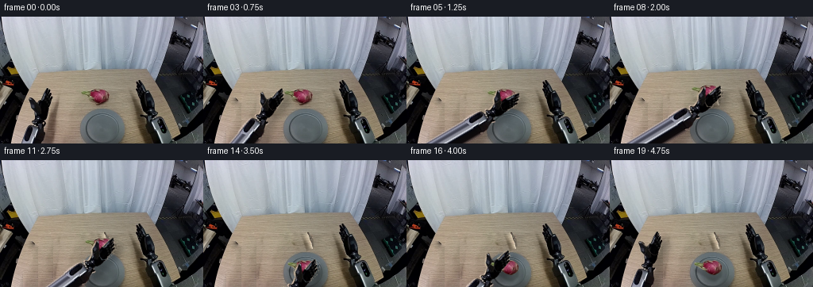
展开代码变化
--- 上一保存版本
+++ 本次保存版本
@@ -0,0 +1,167 @@
+from pathlib import Path
+import numpy as np
+from PIL import Image, ImageDraw, ImageFilter
+from scipy.ndimage import gaussian_filter, binary_dilation
+from scipy.sparse import lil_matrix
+from scipy.sparse.linalg import spsolve
+import math
+import artifact_io
+
+ROOT=Path(__file__).resolve().parent
+W,H=256,160
+SRC=np.array(Image.open(ROOT/'first_frame.png').convert('RGB'))
+S=4
+
+def polygon(points, size=(256,256)):
+ im=Image.new('L',(size[0]*S,size[1]*S))
+ ImageDraw.Draw(im).polygon([(round(x*S),round(y*S)) for x,y in points],fill=255)
+ return np.array(im.resize(size,Image.Resampling.LANCZOS))/255.
+
+# Boundaries are local geometric silhouettes traced from the supplied image.
+arm_pts=[(59,90),(61,90),(62,92),(61,96),(63,94),(64,95),(64,100),(65,99),(66,101),(65,106),(63,112),(62,116),(60,120),(59,125),(56,130),(54,131),(54,135),(58,136),(58,138),(55,141),(55,146),(56,150),(55,160),(25,160),(27,151),(30,144),(33,139),(36,137),(40,137),(40,135),(38,134),(38,132),(39,131),(42,130),(42,126),(42,120),(39,118),(37,115),(36,110),(35,105),(36,103),(38,102),(40,104),(43,107),(46,109),(49,107),(51,103),(53,99),(54,96),(56,92),(58,91)]
+finger_pts=[(49,110),(50,105),(53,99),(55,95),(58,91),(59,90),(61,90),(62,92),(61,96),(63,94),(64,95),(64,100),(65,99),(66,101),(65,106),(63,112),(61,117),(57,120),(53,118),(50,115)]
+thumb_pts=[(36,103),(38,102),(40,104),(43,107),(46,110),(45,116),(43,120),(40,120),(38,117),(37,113),(36,109),(35,105)]
+fruit_pts=[(103,94),(108,94),(112,95),(114,94),(114,93),(117,92),(120,91),(124,92),(128,91),(131,92),(134,94),(136,96),(137,99),(137,103),(135,106),(132,108),(128,110),(124,109),(121,108),(118,106),(116,104),(113,103),(110,101),(107,99),(104,98),(102,96)]
+arm_mask=polygon(arm_pts)
+finger_mask=polygon(finger_pts)*arm_mask
+thumb_mask=polygon(thumb_pts)*arm_mask
+fruit_mask=polygon(fruit_pts)[:H]
+
+# Extrapolate the same rigid forearm casing below the image boundary, so its
+# offscreen continuation remains connected while the visible wrist advances.
+arm_rgb=np.zeros((256,256,3),np.uint8)
+arm_rgb[:H]=SRC
+for y in range(160,256):
+ shift=-.40*(y-158)
+ x=np.arange(256)-shift
+ for c in range(3):
+ profile=SRC[155:159,:,c].mean(axis=0)
+ arm_rgb[y,:,c]=np.interp(x,np.arange(256),profile)
+ a=25-.4*(y-160); b=55-.4*(y-160)
+ arm_mask[y]=np.clip(np.minimum(np.arange(256)-a+.5,b-np.arange(256)+.5),0,1)
+
+base_mask=arm_mask*(1-finger_mask)*(1-thumb_mask)
+
+def texture_fill(image, hole, source):
+ # Poisson blending copies real table grain and matches surrounding lighting.
+ hole=hole.astype(bool)
+ coords=np.argwhere(hole)
+ indices=np.full(hole.shape,-1,int); indices[hole]=np.arange(len(coords))
+ A=lil_matrix((len(coords),len(coords)),dtype=np.float64)
+ rhs=np.zeros((len(coords),3))
+ im=image.astype(float); source=source.astype(float)
+ anchor=.025
+ for k,(y,x) in enumerate(coords):
+ n=0
+ rhs[k]+=anchor*source[y,x]
+ for dy,dx in [(1,0),(-1,0),(0,1),(0,-1)]:
+ yy,xx=y+dy,x+dx
+ if 0<=yy<H and 0<=xx<W:
+ n+=1
+ rhs[k]+=source[y,x]-source[yy,xx]
+ j=indices[yy,xx]
+ if j>=0: A[k,j]=-1
+ else: rhs[k]+=im[yy,xx]
+ A[k,k]=n+anchor
+ result=im.copy()
+ for c in range(3):result[:,:,c][hole]=spsolve(A.tocsr(),rhs[:,c])
+ return np.uint8(np.clip(result,0,255))
+
+# Only the moving object's original footprint and its shadow are reconstructed.
+shadow_region=polygon([(59,102),(68,99),(75,105),(72,123),(68,143),(70,160),(52,160),(55,139),(57,120)],(W,H))
+remove_arm=binary_dilation(arm_mask[:H]>.07,iterations=1)|(shadow_region>.05)
+# Stay strictly inside the visible table boundary.
+yy,xx=np.mgrid[:H,:W]
+remove_arm &= (xx>48-.202*yy)&(yy>=88)
+texture=SRC.copy()
+for y in range(H):
+ for x in range(10,80):
+ texture[y,x]=SRC[y,77+((x-10)%19)]
+clean_arm=texture_fill(SRC,remove_arm,texture)
+fruit_hole=binary_dilation(fruit_mask>.03,iterations=1)
+fruit_hole|=polygon([(115,103),(136,102),(140,107),(136,113),(124,115),(116,110)],(W,H))>.1
+fruit_texture=clean_arm.copy()
+for y in range(88,117):
+ for x in range(100,143):fruit_texture[y,x]=SRC[y,x+40]
+clean_all=texture_fill(clean_arm,fruit_hole,fruit_texture)
+
+# Premultiplied-alpha rigid transforms avoid fringes and never distort parts.
+def layer(rgb,alpha,center,angle=0,origin=(48.5,103)):
+ t=math.radians(angle);c=math.cos(t);s=math.sin(t)
+ ox,oy=origin;cx,cy=center
+ # Output -> source inverse rigid transform.
+ coeff=(c,s,ox-c*cx-s*cy,-s,c,oy+s*cx-c*cy)
+ a=np.array(Image.fromarray(np.uint8(np.clip(alpha*255,0,255))).transform((W,H),Image.Transform.AFFINE,coeff,Image.Resampling.BICUBIC))/255.
+ color=np.zeros((H,W,3),float)
+ for ch in range(3):
+ pre=np.uint8(np.clip(rgb[:,:,ch]*alpha,0,255))
+ color[:,:,ch]=np.array(Image.fromarray(pre).transform((W,H),Image.Transform.AFFINE,coeff,Image.Resampling.BICUBIC))
+ return color,np.clip(a,0,1)
+
+def joint_layer(rgb,alpha,center,angle,joint,hinge):
+ # Compose a rigid finger joint rotation with the whole wrist pose.
+ t=math.radians(angle); ct,st=math.cos(t),math.sin(t)
+ q=math.radians(joint);cq,sq=math.cos(q),math.sin(q)
+ ox,oy=48.5,103; hx,hy=hinge
+ # transformed canonical origin after rotating around the hinge
+ rx=hx+cq*(ox-hx)-sq*(oy-hy)
+ ry=hy+sq*(ox-hx)+cq*(oy-hy)
+ pos=(center[0]+ct*(rx-ox)-st*(ry-oy),center[1]+st*(rx-ox)+ct*(ry-oy))
+ return layer(rgb,alpha,pos,angle+joint)
+
+def over(canvas,lay):
+ col,a=lay
+ return canvas*(1-a[:,:,None])+col
+
+def smooth(a):return a*a*(3-2*a)
+def interpolate(keys,i):
+ for k in range(len(keys)-1):
+ if keys[k][0]<=i<=keys[k+1][0]:
+ t=smooth((i-keys[k][0])/(keys[k+1][0]-keys[k][0]))
+ return np.array(keys[k][1:])*(1-t)+np.array(keys[k+1][1:])*t
+ return np.array(keys[-1][1:])
+
+pose_keys=[(0,48.5,103,0),(2,70,99,12),(5,125,100,38),(7,125,100,38),(9,127,90,36),(11,130,107,32),(13,129,133,27),(14,129,135,27),(15,129,135,27),(17,97,109,17),(19,48.5,103,0)]
+close_keys=[(0,0),(5,0),(7,1),(14,1),(15,0),(19,0)]
+fruit_keys=[(0,125,100),(7,125,100),(9,127,90),(11,130,107),(13,129,133),(14,129,135),(19,129,135)]
+
+frames=[SRC.copy()]
+for i in range(1,20):
+ px,py,angle=interpolate(pose_keys,i); pos=(px,py)
+ grip=float(interpolate(close_keys,i)[0]);fx,fy=interpolate(fruit_keys,i)
+ canvas=(clean_arm if i<=7 else clean_all).astype(float)
+ main=layer(arm_rgb,base_mask,pos,angle)
+ fingers=joint_layer(arm_rgb,finger_mask,pos,angle,-12*grip,(52,115))
+ thumb=joint_layer(arm_rgb,thumb_mask,pos,angle,12*grip,(43,117))
+ union=np.maximum.reduce([main[1],fingers[1],thumb[1]])
+ lift=max(0,100-fy) if 7<i<12 else 0
+ shadow_im=Image.fromarray(np.uint8(union*255))
+ shadow_im=shadow_im.transform((W,H),Image.Transform.AFFINE,(1,0,-9,0,1,-5-lift*.25),Image.Resampling.BICUBIC)
+ shadow=np.array(shadow_im.filter(ImageFilter.GaussianBlur(3.6+lift*.15)))/255
+ # Shadows fall only on tabletop, not the curtain or off-table background.
+ tabletop=(yy>70)&(xx>48-.202*yy)&(xx<188+.275*(yy-67))
+ canvas*=1-shadow[:,:,None]*tabletop[:,:,None]*(.25-lift*.005)
+ if i>7:
+ # Fruit's soft contact shadow separates on lifting and reforms on landing.
+ fh=abs(fy-135) if i>=11 else max(0,100-fy)
+ shadow_y=135+8 if i>=11 else 108
+ shadow_center=(fx,shadow_y)
+ fr_shadow=layer(np.zeros_like(SRC),fruit_mask,shadow_center,0,(125,100))[1]
+ fr_shadow=gaussian_filter(fr_shadow,1.2+min(fh,15)*.1)
+ canvas*=1-fr_shadow[:,:,None]*(.21 if i>=13 else .11)
+ canvas=over(canvas,main)
+ # Before the grasp, the untouched fruit is already on the background.
+ # During contact its photographed surface is in front of the palm, behind digits.
+ if i>=5:
+ if i<=7:
+ fruit=layer(SRC,fruit_mask,(125,100),0,(125,100))
+ else:
+ fruit=layer(SRC,fruit_mask,(fx,fy),0,(125,100))
+ canvas=over(canvas,fruit)
+ canvas=over(canvas,fingers)
+ canvas=over(canvas,thumb)
+ frames.append(np.uint8(np.clip(canvas,0,255)))
+frames=np.stack(frames)
+artifact_io.save(frames,ROOT)
+Image.fromarray(clean_arm).resize((1024,640)).save(ROOT/'.tmp/clean_arm.png')
+Image.fromarray(clean_all).resize((1024,640)).save(ROOT/'.tmp/clean_all.png')
候选 02播放与检查图
点击播放 · 原生 RGB 像素

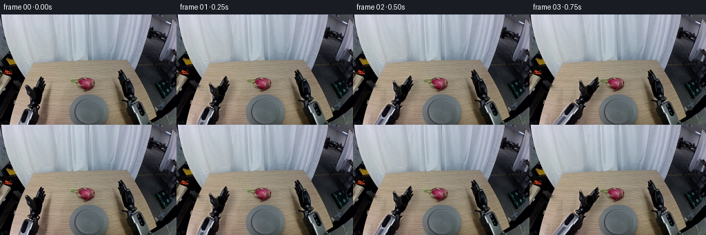
展开代码变化
--- 上一保存版本
+++ 本次保存版本
@@ -69,7 +69,7 @@
# Only the moving object's original footprint and its shadow are reconstructed.
shadow_region=polygon([(59,102),(68,99),(75,105),(72,123),(68,143),(70,160),(52,160),(55,139),(57,120)],(W,H))
-remove_arm=binary_dilation(arm_mask[:H]>.07,iterations=1)|(shadow_region>.05)
+remove_arm=binary_dilation(arm_mask[:H]>.07,iterations=4)|(shadow_region>.05)
# Stay strictly inside the visible table boundary.
yy,xx=np.mgrid[:H,:W]
remove_arm &= (xx>48-.202*yy)&(yy>=88)
@@ -78,11 +78,11 @@
for x in range(10,80):
texture[y,x]=SRC[y,77+((x-10)%19)]
clean_arm=texture_fill(SRC,remove_arm,texture)
-fruit_hole=binary_dilation(fruit_mask>.03,iterations=1)
+fruit_hole=binary_dilation(fruit_mask>.03,iterations=3)
fruit_hole|=polygon([(115,103),(136,102),(140,107),(136,113),(124,115),(116,110)],(W,H))>.1
fruit_texture=clean_arm.copy()
for y in range(88,117):
- for x in range(100,143):fruit_texture[y,x]=SRC[y,x+40]
+ for x in range(99,143):fruit_texture[y,x]=SRC[y,148+((x-99)%12)]
clean_all=texture_fill(clean_arm,fruit_hole,fruit_texture)
# Premultiplied-alpha rigid transforms avoid fringes and never distort parts.
候选 03播放与检查图
点击播放 · 原生 RGB 像素
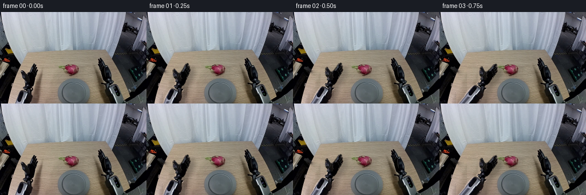
展开代码变化
--- 上一保存版本
+++ 本次保存版本
@@ -1,7 +1,7 @@
from pathlib import Path
import numpy as np
from PIL import Image, ImageDraw, ImageFilter
-from scipy.ndimage import gaussian_filter, binary_dilation
+from scipy.ndimage import gaussian_filter, binary_dilation, distance_transform_edt
from scipy.sparse import lil_matrix
from scipy.sparse.linalg import spsolve
import math
@@ -41,6 +41,17 @@
arm_mask[y]=np.clip(np.minimum(np.arange(256)-a+.5,b-np.arange(256)+.5),0,1)
base_mask=arm_mask*(1-finger_mask)*(1-thumb_mask)
+# The palm overlaps each digit at the mechanical hinge; this prevents a
+# compositing seam where separate rigid parts share the same joint.
+base_mask[118:]=arm_mask[118:]
+# Remove table-colored edge spill from the black hand's photographed silhouette.
+# Keep all metal wrist and forearm texture unchanged.
+lum=arm_rgb.mean(axis=2)
+ys,xs=np.mgrid[:256,:256]
+valid=(arm_mask>.3)&(lum<75)&(ys<129)
+near=distance_transform_edt(~valid,return_distances=False,return_indices=True)
+spill=(arm_mask>.03)&(lum>95)&(ys<125)
+arm_rgb[spill]=arm_rgb[near[0][spill],near[1][spill]]
def texture_fill(image, hole, source):
# Poisson blending copies real table grain and matches surrounding lighting.
@@ -156,7 +167,8 @@
if i<=7:
fruit=layer(SRC,fruit_mask,(125,100),0,(125,100))
else:
- fruit=layer(SRC,fruit_mask,(fx,fy),0,(125,100))
+ fruit_angle=angle-38 if i<=14 else -11
+ fruit=layer(SRC,fruit_mask,(fx,fy),fruit_angle,(125,100))
canvas=over(canvas,fruit)
canvas=over(canvas,fingers)
canvas=over(canvas,thumb)
候选 04播放与检查图
点击播放 · 原生 RGB 像素
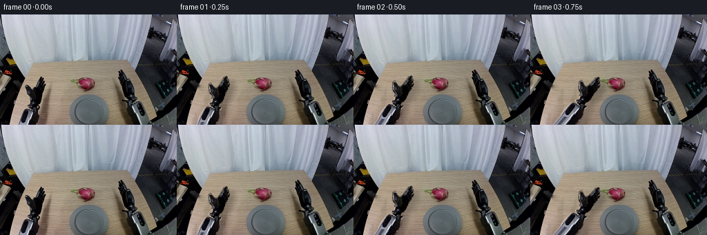
展开代码变化
--- 上一保存版本 +++ 本次保存版本 @@ -50,7 +50,8 @@ ys,xs=np.mgrid[:256,:256] valid=(arm_mask>.3)&(lum<75)&(ys<129) near=distance_transform_edt(~valid,return_distances=False,return_indices=True) -spill=(arm_mask>.03)&(lum>95)&(ys<125) +edge_distance=distance_transform_edt(arm_mask>.5) +spill=(arm_mask>.03)&(lum>140)&(ys<125)&(edge_distance<1.5) arm_rgb[spill]=arm_rgb[near[0][spill],near[1][spill]] def texture_fill(image, hole, source):
可观测工具轨迹
实际执行的命令与返回图片。
命令 1exit 0
/bin/bash -lc "ls -la && cat prompt.txt && printf '\\n---RULES---\\n' && cat GENERATION_RULES.md"
命令 2exit 0
/bin/bash -lc "cat task_spec.json && cat artifact_io.py && python - <<'PY'
from PIL import Image
im=Image.open('first_frame.png'); print(im.size)
im.resize((1024,640)).save('.tmp/enlarged.png')
PY"命令 3exit 0
/bin/bash -lc "python - <<'PY'
from PIL import Image
im=Image.open('first_frame.png')
im.crop((160,72,225,160)).resize((520,704)).save('.tmp/arm.png')
im.crop((100,85,144,114)).resize((704,464)).save('.tmp/fruit.png')
PY"命令 4exit 0
/bin/bash -lc "python - <<'PY' import importlib.util for x in ['numpy','PIL','scipy','cv2']: print(x, bool(importlib.util.find_spec(x))) PY"
命令 5exit 0
/bin/bash -lc "python - <<'PY'
from PIL import Image,ImageDraw
im=Image.open('first_frame.png').resize((1024,640))
d=ImageDraw.Draw(im)
for x in range(0,256,10):
d.line((x*4,0,x*4,640),fill=(255,255,255,100),width=1); d.text((x*4,0),str(x),fill='red')
for y in range(0,160,10):
d.line((0,y*4,1024,y*4),fill=(255,255,255,100),width=1); d.text((0,y*4),str(y),fill='red')
im.save('.tmp/grid.png')
PY"命令 6exit 0
/bin/bash -lc "python - <<'PY'
from PIL import Image,ImageDraw
im=Image.open('first_frame.png').crop((20,85,75,160)).resize((440,600),Image.Resampling.NEAREST)
d=ImageDraw.Draw(im)
for x in range(25,75,5):
d.line(((x-20)*8,0,(x-20)*8,600),fill=(180,180,180));d.text(((x-20)*8,0),str(x),fill='red')
for y in range(90,160,5):
d.line((0,(y-85)*8,440,(y-85)*8),fill=(180,180,180));d.text((0,(y-85)*8),str(y),fill='red')
im.save('.tmp/leftgrid.png')
PY"命令 7exit 0
/bin/bash -lc "python - <<'PY'
from PIL import Image
im=Image.open('first_frame.png')
im.crop((24,85,70,160)).resize((552,900)).save('.tmp/left.png')
PY"命令 8exit 0
/bin/bash -lc "python - <<'PY'
from PIL import Image,ImageDraw
im=Image.open('first_frame.png').crop((160,75,235,160)).resize((600,680),Image.Resampling.NEAREST)
d=ImageDraw.Draw(im)
for x in range(165,235,5):
d.line(((x-160)*8,0,(x-160)*8,680),fill=(180,180,180));d.text(((x-160)*8,0),str(x),fill='red')
for y in range(80,160,5):
d.line((0,(y-75)*8,600,(y-75)*8),fill=(180,180,180));d.text((0,(y-75)*8),str(y),fill='red')
im.save('.tmp/rightgrid.png')
PY"命令 9exit 0
/bin/bash -lc "cat > generate.py <<'PY'
from pathlib import Path
import numpy as np
from PIL import Image, ImageDraw, ImageFilter
from scipy.ndimage import gaussian_filter, binary_dilation
from scipy.sparse import lil_matrix
from scipy.sparse.linalg import spsolve
import math
import artifact_io
ROOT=Path(__file__).resolve().parent
W,H=256,160
SRC=np.array(Image.open(ROOT/'first_frame.png').convert('RGB'))
S=4
def polygon(points, size=(256,256)):
im=Image.new('L',(size[0]*S,size[1]*S))
ImageDraw.Draw(im).polygon([(round(x*S),round(y*S)) for x,y in points],fill=255)
return np.array(im.resize(size,Image.Resampling.LANCZOS))/255.
# Boundaries are local geometric silhouettes traced from the supplied image.
arm_pts=[(59,90),(61,90),(62,92),(61,96),(63,94),(64,95),(64,100),(65,99),(66,101),(65,106),(63,112),(62,116),(60,120),(59,125),(56,130),(54,131),(54,135),(58,136),(58,138),(55,141),(55,146),(56,150),(55,160),(25,160),(27,151),(30,144),(33,139),(36,137),(40,137),(40,135),(38,134),(38,132),(39,131),(42,130),(42,126),(42,120),(39,118),(37,115),(36,110),(35,105),(36,103),(38,102),(40,104),(43,107),(46,109),(49,107),(51,103),(53,99),(54,96),(56,92),(58,91)]
finger_pts=[(49,110),(50,105),(53,99),(55,95),(58,91),(59,90),(61,90),(62,92),(61,96),(63,94),(64,95),(64,100),(65,99),(66,101),(65,106),(63,112),(61,117),(57,120),(53,118),(50,115)]
thumb_pts=[(36,103),(38,102),(40,104),(43,107),(46,110),(45,116),(43,120),(40,120),(38,117),(37,113),(36,109),(35,105)]
fruit_pts=[(103,94),(108,94),(112,95),(114,94),(114,93),(117,92),(120,91),(124,92),(128,91),(131,92),(134,94),(136,96),(137,99),(137,103),(135,106),(132,108),(128,110),(124,109),(121,108),(118,106),(116,104),(113,103),(110,101),(107,99),(104,98),(102,96)]
arm_mask=polygon(arm_pts)
finger_mask=polygon(finger_pts)*arm_mask
thumb_mask=polygon(thumb_pts)*arm_mask
fruit_mask=polygon(fruit_pts)[:H]
# Extrapolate the same rigid forearm casing below the image boundary, so its
# offscreen continuation remains connected while the visible wrist advances.
arm_rgb=np.zeros((256,256,3),np.uint8)
arm_rgb[:H]=SRC
for y in range(160,256):
shift=-.40*(y-158)
x=np.arange(256)-shift
for c in range(3):
profile=SRC[155:159,:,c].mean(axis=0)
arm_rgb[y,:,c]=np.interp(x,np.arange(256),profile)
a=25-.4*(y-160); b=55-.4*(y-160)
arm_mask[y]=np.clip(np.minimum(np.arange(256)-a+.5,b-np.arange(256)+.5),0,1)
base_mask=arm_mask*(1-finger_mask)*(1-thumb_mask)
def texture_fill(image, hole, source):
# Poisson blending copies real table grain and matches surrounding lighting.
hole=hole.astype(bool)
coords=np.argwhere(hole)
indices=np.full(hole.shape,-1,int); indices[hole]=np.arange(len(coords))
A=lil_matrix((len(coords),len(coords)),dtype=np.float64)
rhs=np.zeros((len(coords),3))
im=image.astype(float); source=source.astype(float)
anchor=.025
for k,(y,x) in enumerate(coords):
n=0
rhs[k]+=anchor*source[y,x]
for dy,dx in [(1,0),(-1,0),(0,1),(0,-1)]:
yy,xx=y+dy,x+dx
if 0<=yy<H and 0<=xx<W:
n+=1
rhs[k]+=source[y,x]-source[yy,xx]
j=indices[yy,xx]
if j>=0: A[k,j]=-1
else: rhs[k]+=im[yy,xx]
A[k,k]=n+anchor
result=im.copy()
for c in range(3):result[:,:,c][hole]=spsolve(A.tocsr(),rhs[:,c])
return np.uint8(np.clip(result,0,255))
# Only the moving object's original footprint and its shadow are reconstructed.
shadow_region=polygon([(59,102),(68,99),(75,105),(72,123),(68,143),(70,160),(52,160),(55,139),(57,120)],(W,H))
remove_arm=binary_dilation(arm_mask[:H]>.07,iterations=1)|(shadow_region>.05)
# Stay strictly inside the visible table boundary.
yy,xx=np.mgrid[:H,:W]
remove_arm &= (xx>48-.202*yy)&(yy>=88)
texture=SRC.copy()
for y in range(H):
for x in range(10,80):
texture[y,x]=SRC[y,77+((x-10)%19)]
clean_arm=texture_fill(SRC,remove_arm,texture)
fruit_hole=binary_dilation(fruit_mask>.03,iterations=1)
fruit_hole|=polygon([(115,103),(136,102),(140,107),(136,113),(124,115),(116,110)],(W,H))>.1
fruit_texture=clean_arm.copy()
for y in range(88,117):
for x in range(100,143):fruit_texture[y,x]=SRC[y,x+40]
clean_all=texture_fill(clean_arm,fruit_hole,fruit_texture)
# Premultiplied-alpha rigid transforms avoid fringes and never distort parts.
def layer(rgb,alpha,center,angle=0,origin=(48.5,103)):
t=math.radians(angle);c=math.cos(t);s=math.sin(t)
ox,oy=origin;cx,cy=center
# Output -> source inverse rigid transform.
coeff=(c,s,ox-c*cx-s*cy,-s,c,oy+s*cx-c*cy)
a=np.array(Image.fromarray(np.uint8(np.clip(alpha*255,0,255))).transform((W,H),Image.Transform.AFFINE,coeff,Image.Resampling.BICUBIC))/255.
color=np.zeros((H,W,3),float)
for ch in range(3):
pre=np.uint8(np.clip(rgb[:,:,ch]*alpha,0,255))
color[:,:,ch]=np.array(Image.fromarray(pre).transform((W,H),Image.Transform.AFFINE,coeff,Image.Resampling.BICUBIC))
return color,np.clip(a,0,1)
def joint_layer(rgb,alpha,center,angle,joint,hinge):
# Compose a rigid finger joint rotation with the whole wrist pose.
t=math.radians(angle); ct,st=math.cos(t),math.sin(t)
q=math.radians(joint);cq,sq=math.cos(q),math.sin(q)
ox,oy=48.5,103; hx,hy=hinge
# transformed canonical origin after rotating around the hinge
rx=hx+cq*(ox-hx)-sq*(oy-hy)
ry=hy+sq*(ox-hx)+cq*(oy-hy)
pos=(center[0]+ct*(rx-ox)-st*(ry-oy),center[1]+st*(rx-ox)+ct*(ry-oy))
return layer(rgb,alpha,pos,angle+joint)
def over(canvas,lay):
col,a=lay
return canvas*(1-a[:,:,None])+col
def smooth(a):return a*a*(3-2*a)
def interpolate(keys,i):
for k in range(len(keys)-1):
if keys[k][0]<=i<=keys[k+1][0]:
t=smooth((i-keys[k][0])/(keys[k+1][0]-keys[k][0]))
return np.array(keys[k][1:])*(1-t)+np.array(keys[k+1][1:])*t
return np.array(keys[-1][1:])
pose_keys=[(0,48.5,103,0),(2,70,99,12),(5,125,100,38),(7,125,100,38),(9,127,90,36),(11,130,107,32),(13,129,133,27),(14,129,135,27),(15,129,135,27),(17,97,109,17),(19,48.5,103,0)]
close_keys=[(0,0),(5,0),(7,1),(14,1),(15,0),(19,0)]
fruit_keys=[(0,125,100),(7,125,100),(9,127,90),(11,130,107),(13,129,133),(14,129,135),(19,129,135)]
frames=[SRC.copy()]
for i in range(1,20):
px,py,angle=interpolate(pose_keys,i); pos=(px,py)
grip=float(interpolate(close_keys,i)[0]);fx,fy=interpolate(fruit_keys,i)
canvas=(clean_arm if i<=7 else clean_all).astype(float)
main=layer(arm_rgb,base_mask,pos,angle)
fingers=joint_layer(arm_rgb,finger_mask,pos,angle,-12*grip,(52,115))
thumb=joint_layer(arm_rgb,thumb_mask,pos,angle,12*grip,(43,117))
union=np.maximum.reduce([main[1],fingers[1],thumb[1]])
lift=max(0,100-fy) if 7<i<12 else 0
shadow_im=Image.fromarray(np.uint8(union*255))
shadow_im=shadow_im.transform((W,H),Image.Transform.AFFINE,(1,0,-9,0,1,-5-lift*.25),Image.Resampling.BICUBIC)
shadow=np.array(shadow_im.filter(ImageFilter.GaussianBlur(3.6+lift*.15)))/255
# Shadows fall only on tabletop, not the curtain or off-table background.
tabletop=(yy>70)&(xx>48-.202*yy)&(xx<188+.275*(yy-67))
canvas*=1-shadow[:,:,None]*tabletop[:,:,None]*(.25-lift*.005)
if i>7:
# Fruit's soft contact shadow separates on lifting and reforms on landing.
fh=abs(fy-135) if i>=11 else max(0,100-fy)
shadow_y=135+8 if i>=11 else 108
shadow_center=(fx,shadow_y)
fr_shadow=layer(np.zeros_like(SRC),fruit_mask,shadow_center,0,(125,100))[1]
fr_shadow=gaussian_filter(fr_shadow,1.2+min(fh,15)*.1)
canvas*=1-fr_shadow[:,:,None]*(.21 if i>=13 else .11)
canvas=over(canvas,main)
# Before the grasp, the untouched fruit is already on the background.
# During contact its photographed surface is in front of the palm, behind digits.
if i>=5:
if i<=7:
fruit=layer(SRC,fruit_mask,(125,100),0,(125,100))
else:
fruit=layer(SRC,fruit_mask,(fx,fy),0,(125,100))
canvas=over(canvas,fruit)
canvas=over(canvas,fingers)
canvas=over(canvas,thumb)
frames.append(np.uint8(np.clip(canvas,0,255)))
frames=np.stack(frames)
artifact_io.save(frames,ROOT)
Image.fromarray(clean_arm).resize((1024,640)).save(ROOT/'.tmp/clean_arm.png')
Image.fromarray(clean_all).resize((1024,640)).save(ROOT/'.tmp/clean_all.png')
PY
python generate.py"命令 10exit 0
/bin/bash -lc "python - <<'PY'
from PIL import Image, ImageDraw
im=Image.open('.tmp/clean_all.png').resize((256,160)).crop((25,90,80,160)).resize((440,560))
d=ImageDraw.Draw(im)
for x in range(30,80,5):
d.line(((x-25)*8,0,(x-25)*8,560),fill=(180,180,180));d.text(((x-25)*8,0),str(x),fill='red')
for y in range(95,160,5):
d.line((0,(y-90)*8,440,(y-90)*8),fill=(180,180,180));d.text((0,(y-90)*8),str(y),fill='red')
im.save('.tmp/clean_grid.png')
PY"命令 11exit 0
/bin/bash -lc "python - <<'PY'
import generate as g
from PIL import Image
import numpy as np
for name,arr in [('mask',g.remove_arm),('tex',g.texture),('arm_mask',g.arm_mask[:160])]:
if arr.ndim==2:arr=np.uint8(arr*255)
Image.fromarray(arr).resize((1024,640)).save('.tmp/'+name+'.png')
print('dark clean',[(x,y,g.SRC[y,x].tolist(),g.clean_arm[y,x].tolist(),g.remove_arm[y,x],g.texture[y,x].tolist()) for x,y in [(40,104),(42,105),(39,103),(40,102)]])
PY"命令 12exit 0
/bin/bash -lc 'python generate.py'
命令 13exit 0
/bin/bash -lc "python - <<'PY'
from PIL import Image
for i in [1,7,9,13,15,19]:
Image.open(f'frames/{i:02d}.png').resize((1024,640)).save(f'.tmp/f{i:02d}.png')
PY"命令 14exit 0
/bin/bash -lc "python generate.py && python - <<'PY'
from PIL import Image
for i in [7,13,19]:
Image.open(f'frames/{i:02d}.png').resize((1024,640)).save(f'.tmp/f{i:02d}.png')
PY"命令 15exit 0
/bin/bash -lc "command -v ffmpeg || true; python generate.py && python - <<'PY'
from PIL import Image
import numpy as np
from pathlib import Path
frames=np.stack([np.asarray(Image.open(p).convert('RGB')) for p in sorted(Path('frames').glob('*.png'))])
assert frames.shape == (20,160,256,3)
assert frames.dtype == np.uint8
assert np.array_equal(frames[0],np.asarray(Image.open('first_frame.png').convert('RGB')))
tensor=np.load('pixels.npz')['pixels']
assert tensor.shape == (160,256,20)
print('Validated: 20 uint8 RGB frames, 256x160, frame 00 pixel-identical.')
print('RGB artifacts: pixels.npz, frames/, index.html, inspection.png')
PY"视觉工具实际返回图片 1
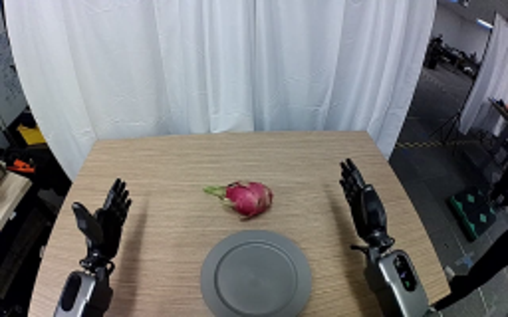
视觉工具实际返回图片 2
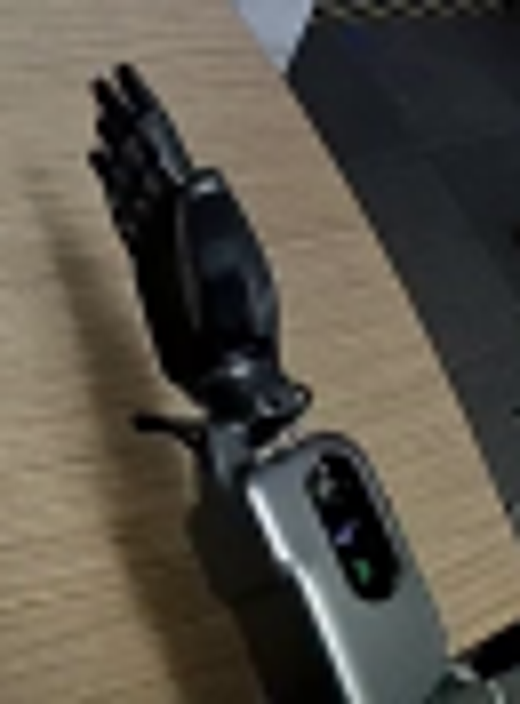
视觉工具实际返回图片 3
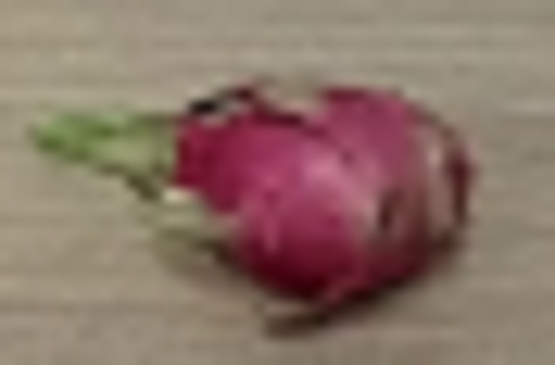
视觉工具实际返回图片 4
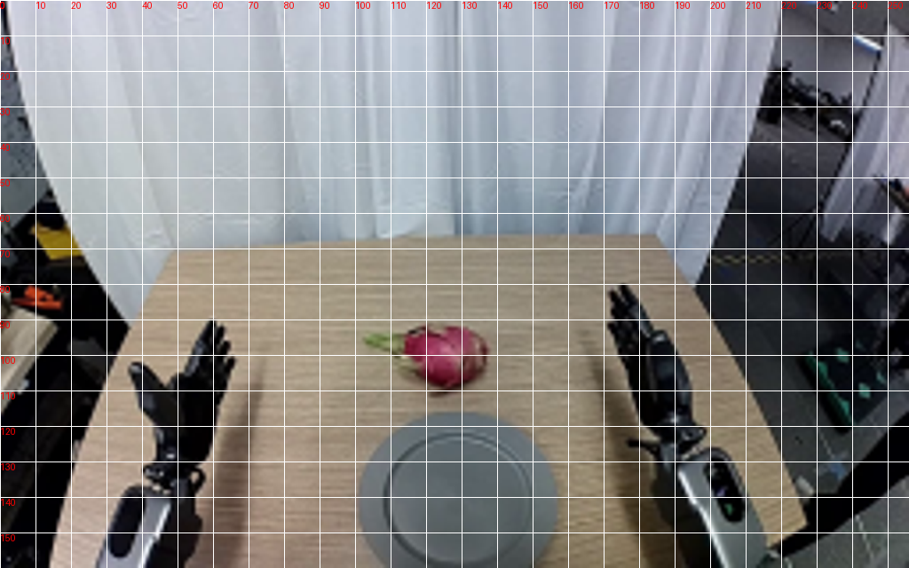
视觉工具实际返回图片 5
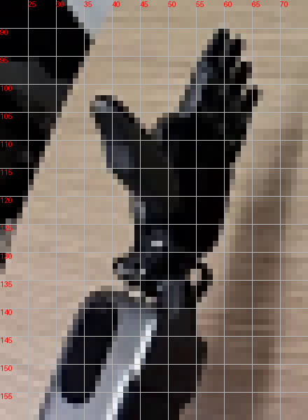
视觉工具实际返回图片 6
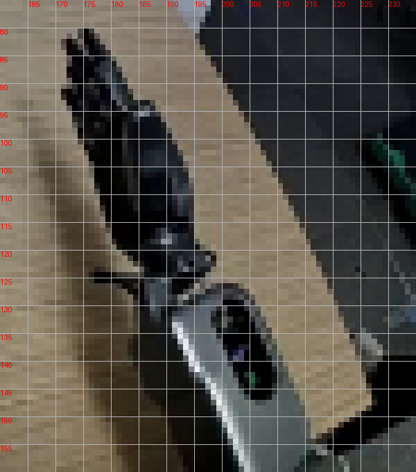
视觉工具实际返回图片 7

视觉工具实际返回图片 8
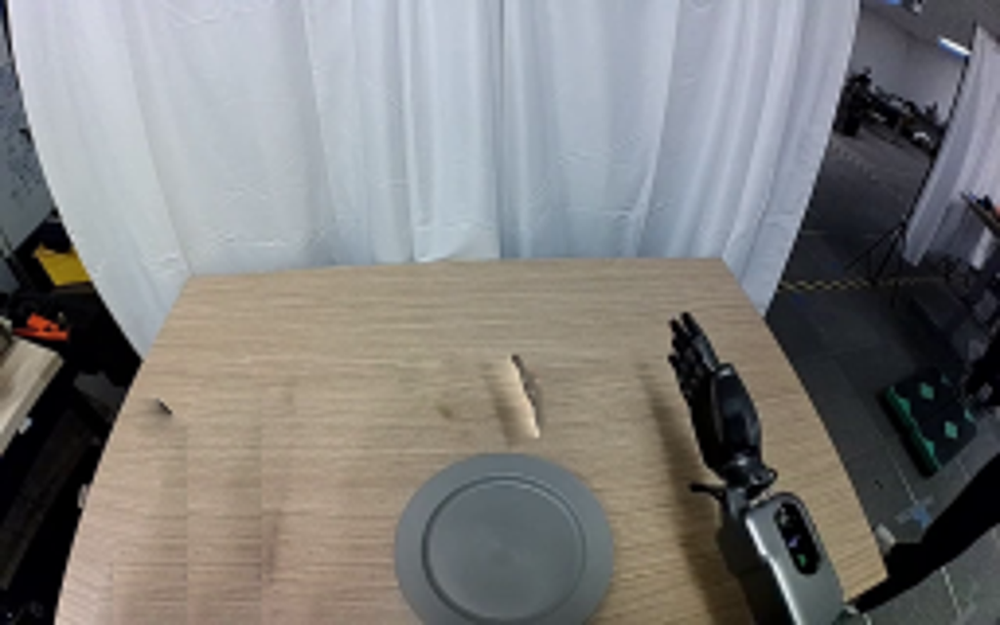
视觉工具实际返回图片 9
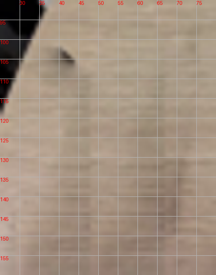
视觉工具实际返回图片 10
视觉工具实际返回图片 11
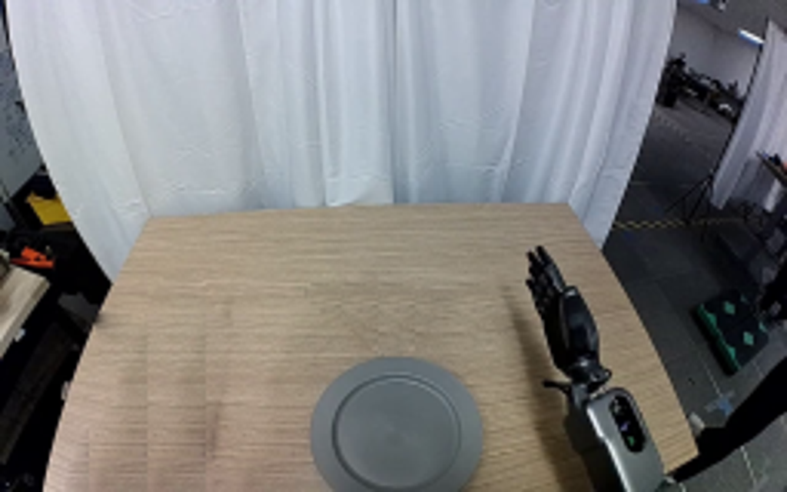
视觉工具实际返回图片 12
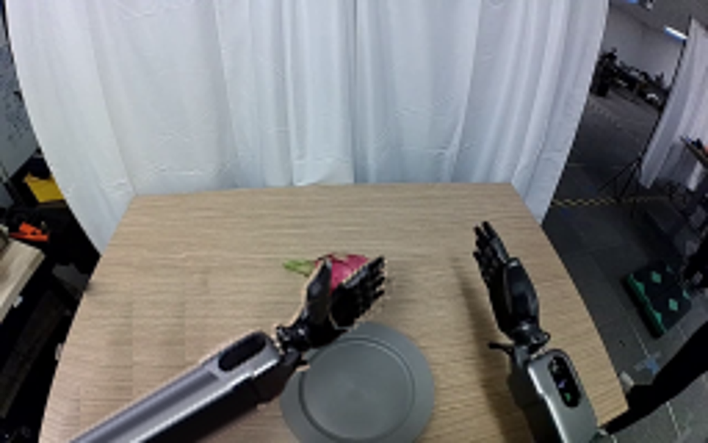
视觉工具实际返回图片 13
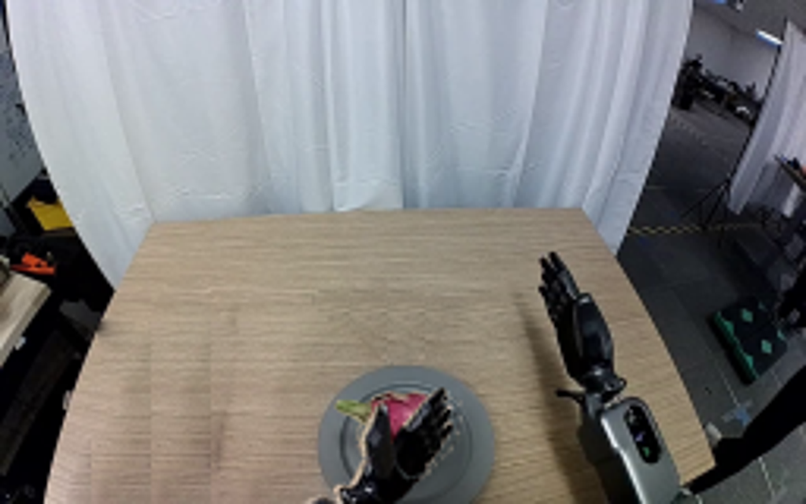
视觉工具实际返回图片 14
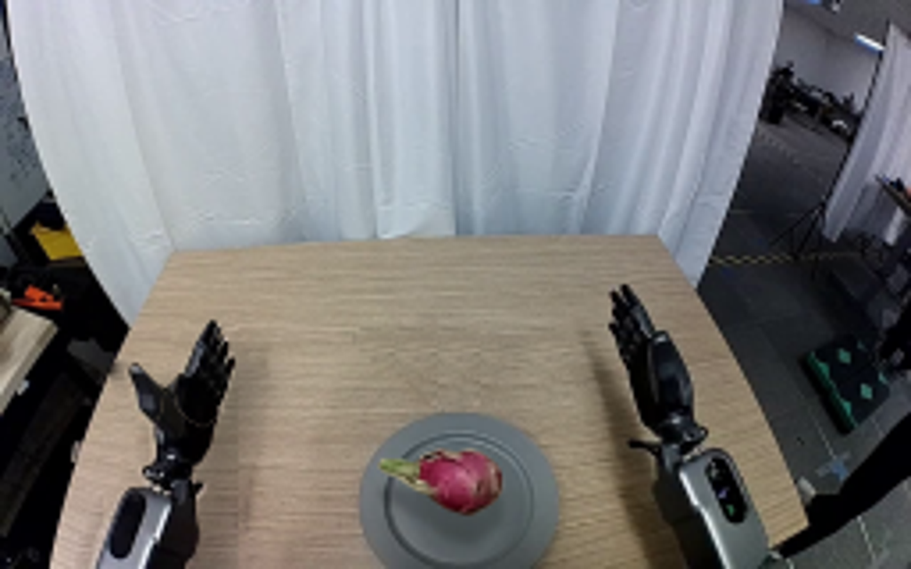
视觉工具实际返回图片 15
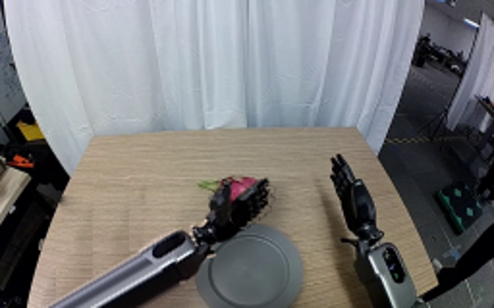
视觉工具实际返回图片 16
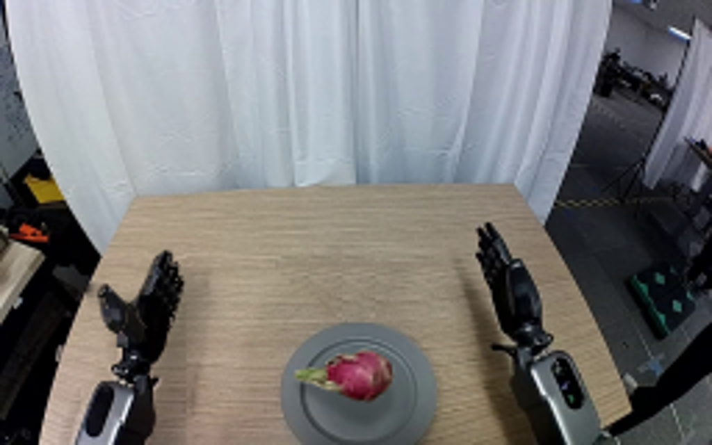
保存候选 4 份；完成命令 15 次；可验证图片返回 16 张。原始 API 响应与完整日志保留在本地。